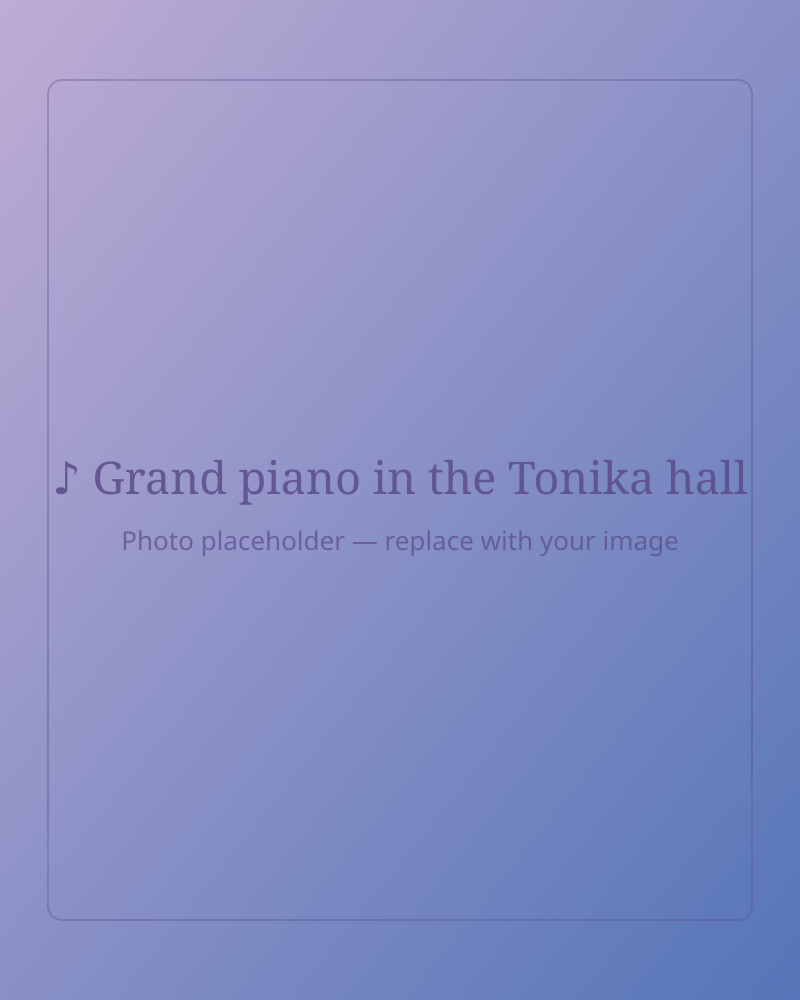
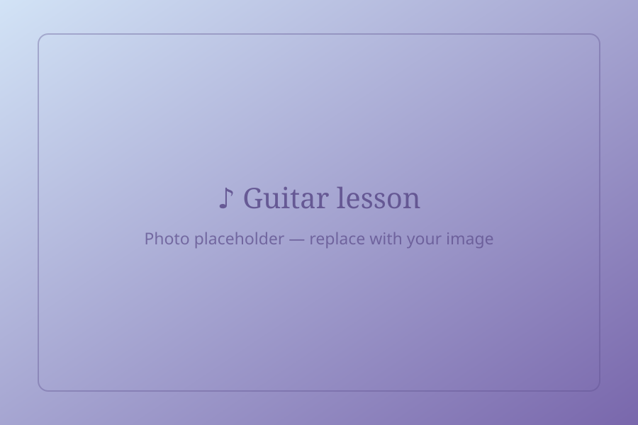
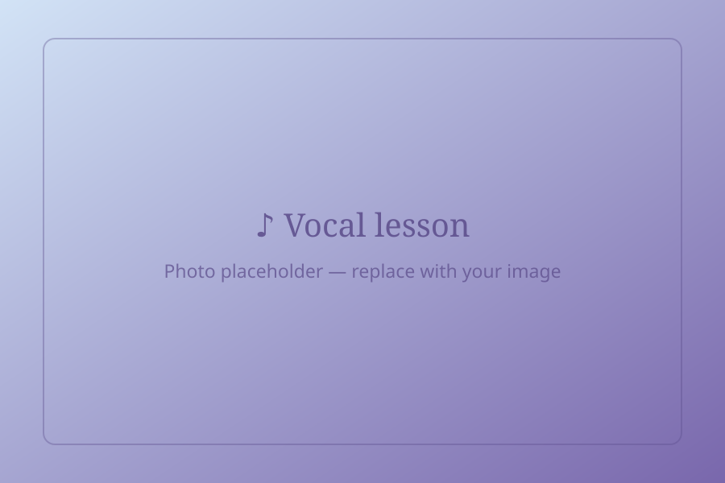

Pianino
Nauka gry na pianinie dla dzieci, młodzieży i dorosłych. Rozwijamy technike, słuch muzyczny oraz umiejętność interpretacji utworów, od pierwszych melodii po bardziej zaawansowany repertuar.
Muzyka, która jak Tonika,
daje poczucie pewności i własnego miejsca
Lekcje indywidualne i grupowe gry na instrumentach oraz wokalu dla dzieci i dorosłych, prowadzone przez profesjonalnych muzyków. Oferujemy także autorski program musicalowy oraz zajęcia z muzykoterapii, socjoterapii i arterapii, wspierające rozwój, kreatywność i relacje.
30 minutowa lekcja próbna · bez zabowiązań · zapewniamy instrumenty

W Szkole Tonika najważniejsze są potrzeby i zainteresowania osoby, która chce grać, śpiewać i rozwijać się poprzez muzykę. Program zajęć dostosowujemy indywidualnie, tak aby każdy mógł rozwijać swoje umiejetności, kreatywność i pewność siebie.
Tutaj każdy znajdzie coś dla siebie - od programów skierowanych do dorosłych po zajęcia dla najmłodszych , którym dajemy przestrzeń do odkrywania siebie, rozwijania wyobraźni i budowania relacji poprzez muzykę.
Skup się na własnych celach na zajęciach indywidualnych lub czerp radość ze wspólnego tworzenia na zajęciach grupowych
Uczą Cię muzycy, którzy sami tworzą, występują na scenie i nieustannie rozwijają swój warsztat.
Zajecia prowadzone sa w profesjonalnym studiu, gdzie mozesz nagrac swoje wykonanie lub piosenkę.
Muzyka blisko Ciebie - w sercu Wilanowa. Stworzyliśmy tutaj kameralną przestrzeń, w której każdy może rozwijać swoje pasje.
Nauka gry na pianinie dla dzieci, młodzieży i dorosłych. Rozwijamy technike, słuch muzyczny oraz umiejętność interpretacji utworów, od pierwszych melodii po bardziej zaawansowany repertuar.

Gra na gitarze akustycznej i elektrycznej. Poznaj akordy, rytmikę, improwizacje i pracę w zespole, rozwijając swój własny styl muzyczny.

Twórz własną muzykę od podstaw. Poznaj zasady harmonii, aranżacji i pracy z melodią, ucząc się wyrażać swoje pomysły poprzez autorskie utwory.
Oczywiście! Na naukę muzyki nigdy nie jest za późno. Program zajęć dopasowujemy do wieku, potrzeb, możliwości i zainteresowań ucznia. Nie musisz mieć wcześniejszego doświadczenia - możesz zacząć zupełnie od podstaw.
Nie! Na początkowym etapie nauki uczeń może korzystać z insturmentu dostępnego w nasyzm studiu. Jeżeli obawiasz się, że Twoje dziecko może z czasem zmienić swoje zainteresowania, nie musisz kupować od razu instrumentu.
Tak. Możemy dostosowac program do konkretnego celu - również do egzaminów, przesłuchań czy dalszej edukacji muzycznej.
Wszystkie zajęcia odbywają się a naszym studiu w Wilanowie, ul. Wiertnicza 45. Istnieje równiez możliwość dojechania do ucznia lub zajęć zdalnych
Nie. Muzykalność można rozwijać poprzez regularny kontakt z muzyką, ćwiczenia i praktykę. Ważniejsza od "wrodzonego talentu" jest ciekawość i zaangażowanie i chęć odkrywania własnych możliwości.